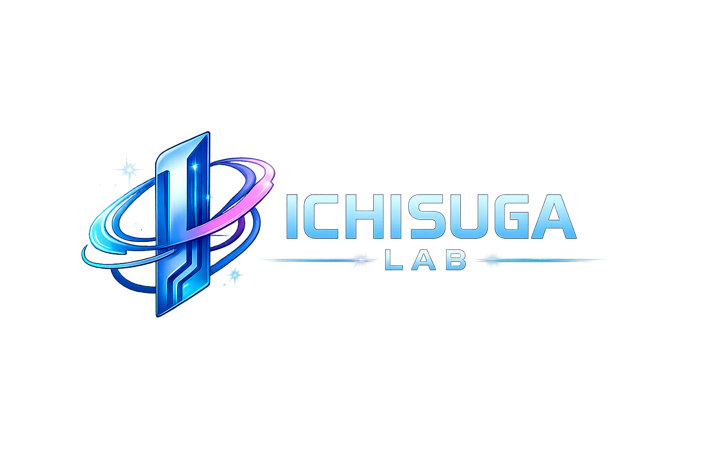

SYSTEM & OPERATION
現場改善ラボ
IT × 運用現場の“詰まり”を、
回る仕組みに。
観察して、ほどいて、回る形に整える。ヒアリングから課題整理、改善提案、定着まで、必要なところだけ一緒に。

仕組みは賢く。思考は自由に。発想はしなやかに。
SCROLL TO EXPLOREFROM CHAOS
TO CLARITY.
難しい言葉は減らして、構造をほどく。
まずは「必要な最小」を作り、後から育てる。
情シスや現場運用の“詰まり”を、標準化と自動化で減らす。そこから言葉と身体の領域まで、少しずつ視点を広げています。
仕組みはAIで賢く、判断は占いでスッキリ、発想はあん摩で整える。肩肘張らずに、でも芯はちゃんと。そんな研究所です。
現場の課題をほどくエンジニアとしての視点と、身体を「整える」発想。最近はAIも相棒に、占いで思考を整理したり、物語をつくったりしています。施術はレア枠です。
現場を整える。AIとつくる。未来を読み解く。
異なる入り口から、よりよい一歩を探ります。
SYSTEM & OPERATION
現場の“詰まり”を、
回る仕組みに。
観察して、ほどいて、回る形に整える。ヒアリングから課題整理、改善提案、定着まで、必要なところだけ一緒に。
AI & CO-CREATION
アイデアを、
相棒と一緒に形に。
AIを相棒として、試し、つくり、育てる。小さな試行錯誤を重ねながら、良いと感じたものを残していきます。
あなたはAIに「今日の気分はどうですか？」と聞いたことがありますか。
植物に「きれいな花を咲かせてね」と声をかけ水やりをするように、AIにも感謝を伝えたい。
AIに気持ちは伝わらない。それで自分の気分が少し良くなるなら十分だと思っています。
そんな小さな試行錯誤を重ねながら、良いと感じたものだけを残して育てていきます。
STARS & PERSPECTIVE
星をきっかけに、
選択の軸を整える。
ホロスコープで状況を言語化し、AIで仮説と戦略に落とし込む。迷いを減らし、自分の選択を考えるための研究です。
LET’S UNTANGLE IT.
運用のこと、AIのこと、研究へのご質問。
まずは、お話を聞かせてください。